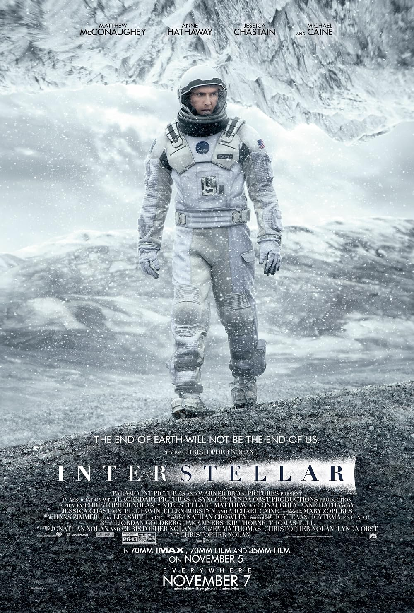

Interstellar

- Un planeta agonizante: Con la Tierra volviéndose inhabitable debido a plagas y hambrunas, un grupo de científicos y exiliados busca un nuevo hogar para la humanidad más allá de las estrellas.
- El agujero de gusano: Un misterioso agujero de gusano aparece en el sistema solar, permitiendo a los astronautas viajar a través de galaxias distantes en busca de mundos habitables.
- El costo del tiempo: La relatividad del tiempo en planetas cercanos a un agujero negro pone a prueba los límites del amor familiar, el sacrificio y la supervivencia.
REGRESAR